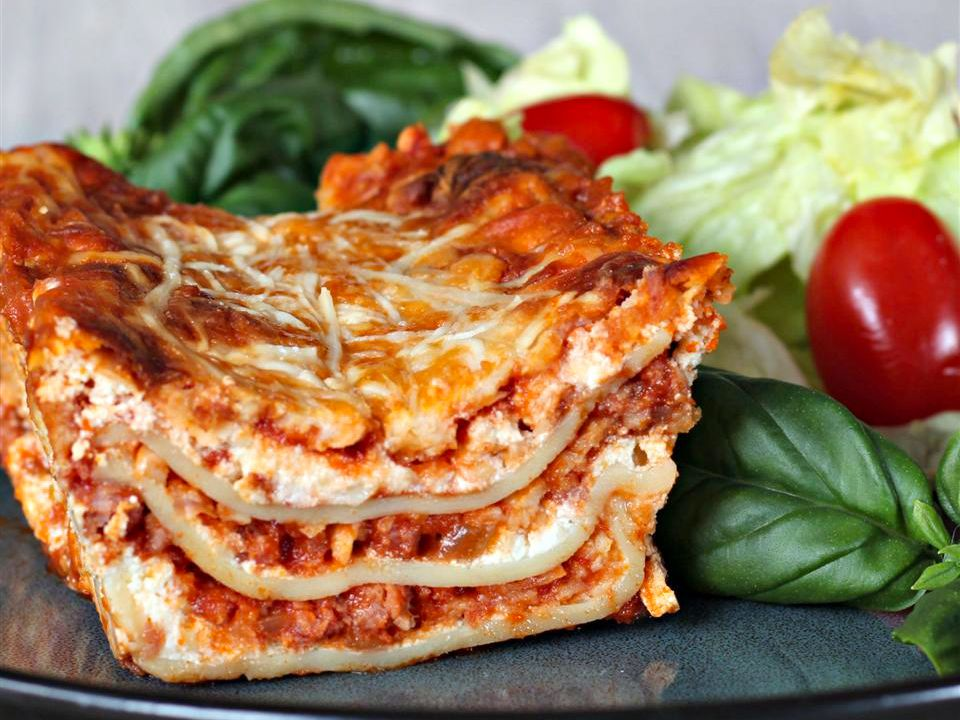

LASAGNA RECIPE

Ingredients:
- Lasagna noodles: 12 pieces
- Ground beef: 1 pound
- Italian sausage: 1 pound
- Onion: 1, finely chopped
- Garlic cloves: 3, minced
- Canned crushed tomatoes: 28 ounces
- Tomato paste: 6 ounces
- Dried basil: 2 teaspoons
- Dried oregano: 1 teaspoon
- Salt and black pepper to taste
- Ricotta cheese: 15 ounces
- Egg: 1
- Shredded mozzarella cheese: 3 cups
- Grated Parmesan cheese: 1 cup
- Fresh parsley: 2 tablespoons, chopped (optional for garnish)
Method:
- Preheat the oven to 375°F (190°C). Grease a 9x13-inch baking dish.
- Cook the lasagna noodles according to package instructions. Drain and set aside.
- In a large skillet, cook the ground beef, Italian sausage, onion, and garlic over medium heat until browned. Drain excess fat.
- Add crushed tomatoes, tomato paste, dried basil, dried oregano, salt, and black pepper to the skillet. Simmer for about 10-15 minutes, stirring occasionally.
- In a separate bowl, mix together ricotta cheese and egg until well combined.
- Spread a thin layer of the meat sauce on the bottom of the prepared baking dish.
- Layer 4 lasagna noodles over the sauce. Spread half of the ricotta cheese mixture over the noodles, then sprinkle with mozzarella and Parmesan cheese.
- Repeat the layers: meat sauce, noodles, remaining ricotta cheese mixture, and cheeses.
- Cover the dish with foil and bake for 25 minutes.
- Remove the foil and bake for an additional 25 minutes until bubbly and the cheese is melted and golden.
- Let the lasagna rest for 10-15 minutes before slicing and serving. Garnish with chopped parsley if desired.
Lasagna is Ready to Enjoy!!!